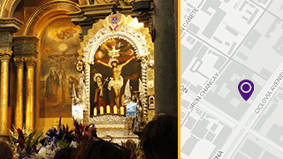
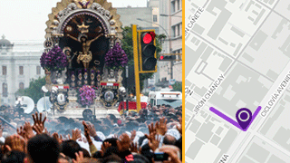
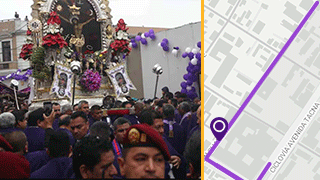
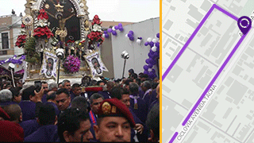
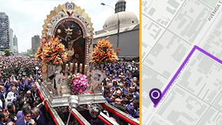

procesión del Señor de los Milagros 2024
Recorridos y planes de desvío durante las salidas el Cristo de Pachacamilla en Lima
Selecciona un recorrido
-
Recorrido 1
5 de octubre
-
Recorrido 2
18 de octubre
-
Recorrido 3
19 de octubre
-
Recorrido 4
28 de octubre
-
Recorrido 5
1 de noviembre
Recorrido 1
5 de octubre | 12:00 p.m.
Iglesia de las Nazarenas

Partida Salida de la Iglesia de las Nazarenas ubicada en el cruce de Huancavelica 515 con Avenida Tacna.
Recorrido 1
5 de octubre | 12:00 p.m.
Av. Emancipación

Punto 2 La procesión continuará por Av. Emancipación.
Recorrido 1
5 de octubre | 12:00 p.m.
Jirón Chancay

Punto 3 Continúa por los jirones Chancay y Conde de Superunda.
Recorrido 1
5 de octubre | 12:00 p.m.
Retorno a la Iglesia de las Nazarenas

Punto final Para luego retornar al Monasterio donde permanecerá guardado hasta la segunda salida.
Recorrido 2
18 de octubre | 6:00 a.m.
Iglesia de las Nazarenas

Partida Inicia en Av. Tacna, y prosigue por Ica.
Recorrido 2
18 de octubre | 6:00 a.m.
Jirón Ica

Punto 1 Prosigue por Ica y Jirón de la Unión
Recorrido 2
18 de octubre | 6:00 a.m.
Plaza de Armas

Punto 2 Ingresa a la Plaza de Armas para los respectivos homenajes recibidos por parte de la Municipalidad Metropolitana de Lima (MML), Palacio de Gobierno y Palacio Arzobispal.
Recorrido 2
18 de octubre | 6:00 a.m.
Plaza de Armas

Punto 3 Tras ello, la venerada imagen continúa en andas por los jirones Carabaya y Ucayali.
Recorrido 2
18 de octubre | 6:00 a.m.
Av. Abancay

Punto 3 Av. Abancay hacia el Jirón Junín.
Recorrido 2
18 de octubre | 6:00 a.m.
Jirón Ancash

Punto 3 Jirones Junín, Huanta y Áncash
Recorrido 2
18 de octubre | 6:00 a.m.
Manuel Pardo

Punto 3 Jirones Manuel Pardo y Junín.
Recorrido 2
18 de octubre | 6:00 a.m.
Iglesia del Carmen

Punto final El recorrido termina en la Iglesia del Carmen donde pernoctará hasta la tercera salida.
Recorrido 3
19 de octubre | 6:00 a.m.
Jirón Huánuco

Partida Tercer recorrido procesional inicia en Jr. Huánuco, y prosigue por Puno y Antonio Bazo para luego ingresar al Hospital Dos de Mayo.
Investigación: Graciela Villasís
Fotografía: Aldo Rosales, Graciela Villasis, PNP
Realización: Nuevas Narrativas EC